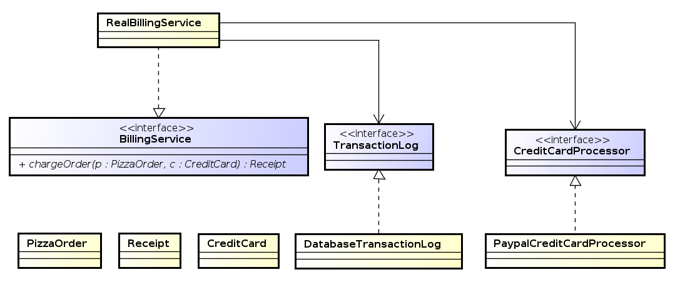

Креирано 2025-12-09 Tue 21:24, притисни ESC за мапу, Ctrl+Shift+F за претрагу, "?" за помоћ

public class RealBillingService implements BillingService {
@Override
public Receipt chargeOrder(PizzaOrder order, CreditCard creditCard) {
CreditCardProcessor processor = new PaypalCreditCardProcessor();
TransactionLog transactionLog = new DatabaseTransactionLog();
try {
ChargeResult result = processor.charge(creditCard, order.getAmount());
transactionLog.logChargeResult(result);
return result.wasSuccessful()
? Receipt.forSuccessfulCharge(order.getAmount())
: Receipt.forDeclinedCharge(result.getDeclineMessage());
} catch (UnreachableException e) {
transactionLog.logConnectException(e);
return Receipt.forSystemFailure(e.getMessage());
}
}
}
Објекат се сам брине о добављању референци али то чини посредством глобалне дељене референце.
public class RealBillingService implements BillingService {
public Receipt chargeOrder(PizzaOrder order, CreditCard creditCard) {
CreditCardProcessor processor = CreditCardProcessorFactory.getInstance();
TransactionLog transactionLog = TransactionLogFactory.getInstance();
try {
ChargeResult result = processor.charge(creditCard, order.getAmount());
transactionLog.logChargeResult(result);
return result.wasSuccessful() ?
Receipt.forSuccessfulCharge(order.getAmount()) :
Receipt.forDeclinedCharge(result.getDeclineMessage());
} catch (UnreachableException e) {
transactionLog.logConnectException(e);
return Receipt.forSystemFailure(e.getMessage());
}
}
}
public class RealBillingServiceTest extends TestCase {
private final PizzaOrder order = new PizzaOrder(100);
private final CreditCard creditCard = new CreditCard(5000);
private final InMemoryTransactionLog transactionLog = new InMemoryTransactionLog();
private final FakeCreditCardProcessor creditCardProcessor = new FakeCreditCardProcessor();
@Override
public void setUp() {
TransactionLogFactory.setInstance(transactionLog);
CreditCardProcessorFactory.setInstance(creditCardProcessor);
}
@Override
public void tearDown() {
TransactionLogFactory.setInstance(null);
CreditCardProcessorFactory.setInstance(null);
}
public void testSuccessfulCharge() {
RealBillingService billingService = new RealBillingService();
Receipt receipt = billingService.chargeOrder(order, creditCard);
assertTrue(receipt.hasSuccessfulCharge());
assertEquals(100.0, receipt.getAmount(), 0.001);
assertEquals(creditCard, creditCardProcessor.getCardOfOnlyCharge());
assertEquals(100.0, creditCardProcessor.getAmountOfOnlyCharge(), 0.001);
assertTrue(transactionLog.wasSuccessLogged());
}
}
Client(Service service) {
this.service = service;
}
public void setService(Service service) {
this.service = service;
}
public interface ServiceSetter {
public void setService(Service service);
}
public class client implements ServiceSetter {
private Service service;
@Override
public void setService(Service service) {
this.service = service;
}
}
public class RealBillingService implements BillingService {
private final CreditCardProcessor processor;
private final TransactionLog transactionLog;
public RealBillingService(CreditCardProcessor processor,
TransactionLog transactionLog) {
this.processor = processor;
this.transactionLog = transactionLog;
}
public Receipt chargeOrder(PizzaOrder order, CreditCard creditCard) {
try {
ChargeResult result = processor.charge(creditCard, order.getAmount());
transactionLog.logChargeResult(result);
return result.wasSuccessful() ?
Receipt.forSuccessfulCharge(order.getAmount()) :
Receipt.forDeclinedCharge(result.getDeclineMessage());
} catch (UnreachableException e) {
transactionLog.logConnectException(e);
return Receipt.forSystemFailure(e.getMessage());
}
}
}
public class RealBillingServiceTest extends TestCase {
private final PizzaOrder order = new PizzaOrder(100);
private final CreditCard creditCard = new CreditCard(5000);
private final InMemoryTransactionLog transactionLog =
new InMemoryTransactionLog();
private final FakeCreditCardProcessor creditCardProcessor =
new FakeCreditCardProcessor();
public void testSuccessfulCharge() {
RealBillingService billingService = new RealBillingService(
creditCardProcessor, transactionLog);
Receipt receipt = billingService.chargeOrder(order, creditCard);
assertTrue(receipt.hasSuccessfulCharge());
assertEquals(100.0, receipt.getAmount(), 0.001);
assertEquals(creditCard, creditCardProcessor.getCardOfOnlyCharge());
assertEquals(100.0, creditCardProcessor.getAmountOfOnlyCharge(), 0.001);
assertTrue(transactionLog.wasSuccessLogged());
}
}
Google GuicePicoContainerSpringProvider<T> - Provides instances of TInject - Identifies injectable constructors, methods, and fields.Named - String-based qualifier.Qualifier - Identifies qualifier annotations.Scope - Identifies scope annotations.Singleton - Identifies a type that the injector only instantiates once.Google GuiceGoogle Guice public class RealBillingService implements BillingService {
private final CreditCardProcessor processor;
private final TransactionLog transactionLog;
@Inject
public RealBillingService(CreditCardProcessor processor,
TransactionLog transactionLog) {
this.processor = processor;
this.transactionLog = transactionLog;
}
public Receipt chargeOrder(PizzaOrder order, CreditCard creditCard) {
try {
ChargeResult result = processor.charge(creditCard, order.getAmount());
transactionLog.logChargeResult(result);
return result.wasSuccessful()
? Receipt.forSuccessfulCharge(order.getAmount())
: Receipt.forDeclinedCharge(result.getDeclineMessage());
} catch (UnreachableException e) {
transactionLog.logConnectException(e);
return Receipt.forSystemFailure(e.getMessage());
}
}
}
public class BillingModule extends AbstractModule {
@Override
protected void configure() {
bind(TransactionLog.class).to(DatabaseTransactionLog.class);
bind(CreditCardProcessor.class).to(PaypalCreditCardProcessor.class);
bind(BillingService.class).to(RealBillingService.class);
}
}
public static void main(String[] args) {
Injector injector = Guice.createInjector(new BillingModule());
BillingService billingService = injector.getInstance(BillingService.class);
Receipt result = billingService.chargeOrder(new PizzaOrder(100),
new CreditCard(500));
System.out.println(result.hasSuccessfulCharge());
}
public class BillingModule extends AbstractModule {
@Override
protected void configure() {
bind(TransactionLog.class).to(DatabaseTransactionLog.class);
bind(DatabaseTransactionLog.class).to(MySqlDatabaseTransactionLog.class);
}
}
package example.pizza;
import com.google.inject.BindingAnnotation;
import java.lang.annotation.Target;
import java.lang.annotation.Retention;
import static java.lang.annotation.RetentionPolicy.RUNTIME;
import static java.lang.annotation.ElementType.PARAMETER;
import static java.lang.annotation.ElementType.FIELD;
import static java.lang.annotation.ElementType.METHOD;
@BindingAnnotation @Target({ FIELD, PARAMETER, METHOD }) @Retention(RUNTIME)
public @interface PayPal {}
...
public class RealBillingService implements BillingService {
@Inject
public RealBillingService(@PayPal CreditCardProcessor processor,
TransactionLog transactionLog) {
...
}
...
bind(CreditCardProcessor.class)
.annotatedWith(PayPal.class)
.to(PayPalCreditCardProcessor.class);
public class RealBillingService implements BillingService {
@Inject
public RealBillingService(@Named("Checkout") CreditCardProcessor processor,
TransactionLog transactionLog) {
...
}
...
...
bind(CreditCardProcessor.class)
.annotatedWith(Names.named("Checkout"))
.to(CheckoutCreditCardProcessor.class);
bind(String.class)
.annotatedWith(Names.named("JDBC URL"))
.toInstance("jdbc:mysql://localhost/pizza");
bind(Integer.class)
.annotatedWith(Names.named("login timeout seconds"))
.toInstance(10);
public class BillingModule extends AbstractModule {
@Override
protected void configure() {
...
}
@Provides
TransactionLog provideTransactionLog() {
DatabaseTransactionLog transactionLog = new DatabaseTransactionLog();
transactionLog.setJdbcUrl("jdbc:mysql://localhost/pizza");
transactionLog.setThreadPoolSize(30);
return transactionLog;
}
}
...
@Provides @PayPal
CreditCardProcessor providePayPalCreditCardProcessor(
@Named("PayPal API key") String apiKey) {
PayPalCreditCardProcessor processor = new PayPalCreditCardProcessor();
processor.setApiKey(apiKey);
return processor;
}
public class DatabaseTransactionLogProvider
implements Provider<TransactionLog> {
private final Connection connection;
@Inject
public DatabaseTransactionLogProvider(Connection connection) {
this.connection = connection;
}
public TransactionLog get() {
DatabaseTransactionLog transactionLog = new DatabaseTransactionLog();
transactionLog.setConnection(connection);
return transactionLog;
}
}
...
public class BillingModule extends AbstractModule {
@Override
protected void configure() {
bind(TransactionLog.class)
.toProvider(DatabaseTransactionLogProvider.class);
}
}
@Singleton
public class InMemoryTransactionLog implements TransactionLog {
/* everything here should be threadsafe! */
}
...
bind(TransactionLog.class)
.to(InMemoryTransactionLog.class).in(Singleton.class);
...
@Provides @Singleton
TransactionLog provideTransactionLog() {
...
}
...
bind(Bar.class).to(Applebees.class).in(Singleton.class);
bind(Grill.class).to(Applebees.class).in(Singleton.class);
InjectorInjector >>> from injector import Injector, inject
>>> class Inner(object):
... def __init__(self):
... self.forty_two = 42
...
>>> class Outer(object):
... @inject
... def __init__(self, inner: Inner):
... self.inner = inner
...
>>> injector = Injector()
>>> outer = injector.get(Outer)
>>> outer.inner.forty_two
42
from injector import Key
Name = Key('name')
Description = Key('description')
from injector import inject, provider, Module
class User(object):
@inject
def __init__(self, name: Name, description: Description):
self.name = name
self.description = description
class UserModule(Module):
def configure(self, binder):
binder.bind(User)
class UserAttributeModule(Module):
def configure(self, binder):
binder.bind(Name, to='Sherlock')
@provider
def describe(self, name: Name) -> Description:
return '%s is a man of astounding insight' % name
http://injector.readthedocs.io/en/latest/terminology.html#injection
from injector import Injector
injector = Injector([UserModule(), UserAttributeModule()])
или
injector = Injector([UserModule, UserAttributeModule])
Употреба:
>>> injector.get(Name)
'Sherlock'
>>> injector.get(Description)
'Sherlock is a man of astounding insight'
>>> user = injector.get(User)
>>> isinstance(user, User)
True
>>> user.name
'Sherlock'
>>> user.description
'Sherlock is a man of astounding insight'
Flask injectorFlask injectorinjector библиотеке и Flask оквира за развој. import sqlite3
from flask import Flask, Config
from flask.views import View
from flask_injector import FlaskInjector
from injector import inject
app = Flask(__name__)
@app.route("/bar")
def bar():
return render("bar.html")
@app.route("/foo")
@inject(db=sqlite3.Connection)
def foo(db):
users = db.execute('SELECT * FROM users').all()
return render("foo.html")
def configure(binder):
binder.bind(
sqlite3.Connection,
to=sqlite3.Connection(':memory:'),
scope=request,
)
FlaskInjector(app=app, modules=[configure])
app.run()